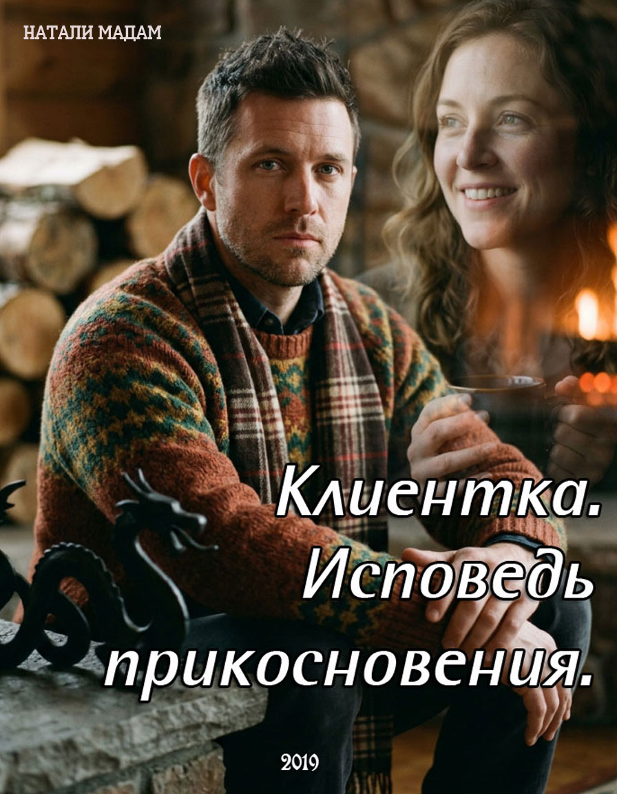

Её тайна. Его вызов. Их терапия.
Устав от однообразных страхов сильных мира сего, преуспевающий московский психоаналитик Натан Атман ищет случай, способный стать легендой, — его собственной Анной О. Кажется, судьба предоставляет ему шанс в лице творческой и независимой женщины из глубокой провинции, чья жизнь осложнена мучительной фобией — боязнью прикосновений. Видя в ней ключ к славе, Натан предлагает сделку: бесплатная терапия в обмен на уникальный материал для его исследования.
Постепенно распутывая клубок травм, Натан открывает для себя мир сильной женщины, выстоявшей среди мужского насилия и лжи. В поисках ответа «Почему судьба так жестока к "хорошим девочкам?"» Натан оказывается на грани, где заканчивается научный интерес и начинается опасная одержимость, грозящая поглотить их обоих.
Подробно